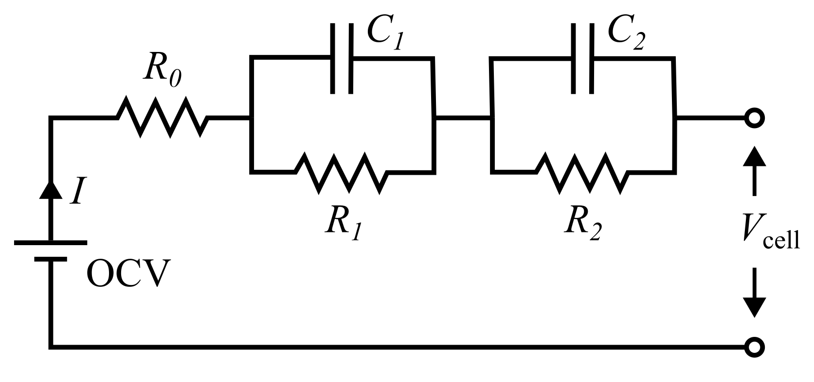

Model Description#
This page outlines the underlying mathematics of the Thevenin equivalent circuit model. The index \(j\) is used throughout the documentation to gernalize the fact that the model can be run with a variable number of resistor-capacitor (RC) elements. When zero RC pairs are specified, the model collapses into the simpler Rint model, discussed here. However, the model also allows any nonzero number of RC pairs, within reason. The figure below illustrates an example Thevenin circuit with two RC pairs.
{kind=link}

The Thevenin circuit is governed by the evolution of the state of charge (soc, -), RC overpotentials (\(V_j\), V), cell voltage (\(V_{\rm cell}\), V), and temperature (\(T_{\rm cell}\), K). soc and \(V_j\) evolve in time as
where \(I\) is the load current (A), \(Q_{\rm max}\) is the maximum nominal cell capacity (Ah), and \(R_j\) and \(C_j\) are the resistance (Ohm) and capacitance (F) of each RC pair \(j\). Note that the sign convention for \(I\) is chosen such that positive \(I\) discharges the battery (reduces soc) and negative \(I\) charges the battery (increases soc). This convention is consistent with common physics-based models, e.g., the single particle model or pseudo-2D model. While not explicitly included in the equations above, \(R_j\) and \(C_j\) are functions of soc and \(T_{\rm cell}\). The temperature increases while the cell is active according to
where \(m\) is mass (kg), \(C_p\) is specific heat capacity (J/kg/K), \(\dot{Q}_{\rm gen}\) is the heat generation (W), and \(\dot{Q}_{\rm conv}\) is the convective heat loss (W). Heat generation and convection are defined by
where \(h\) is the convecitive heat transfer coefficient (W/m2/K), \(A\) is heat loss area (m2), and \(T_{\infty}\) is the air/room temperature (K). \(V_{\rm ocv}\) is the open circuit voltage (V) and is a function of soc.
The overall cell voltage is
where \(R_0\) the lone series resistance (Ohm), as shown in Figure 1. Just like the other resistive elements, \(R_0\) is a function of soc and \(T_{\rm cell}\).